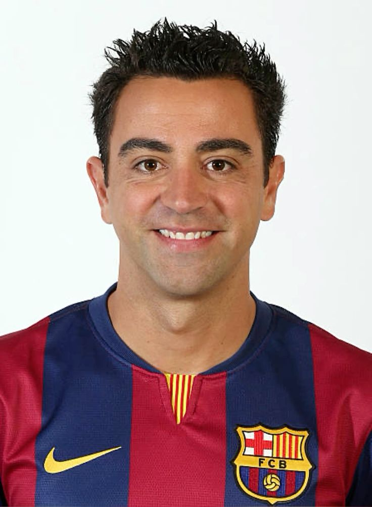
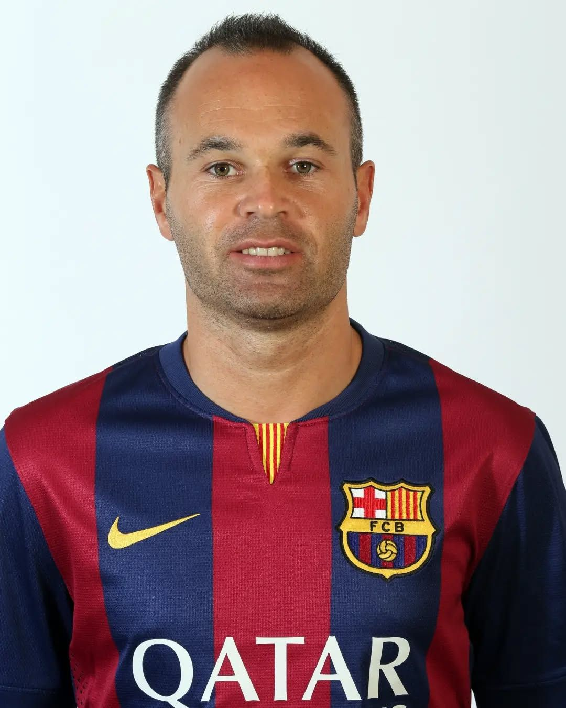
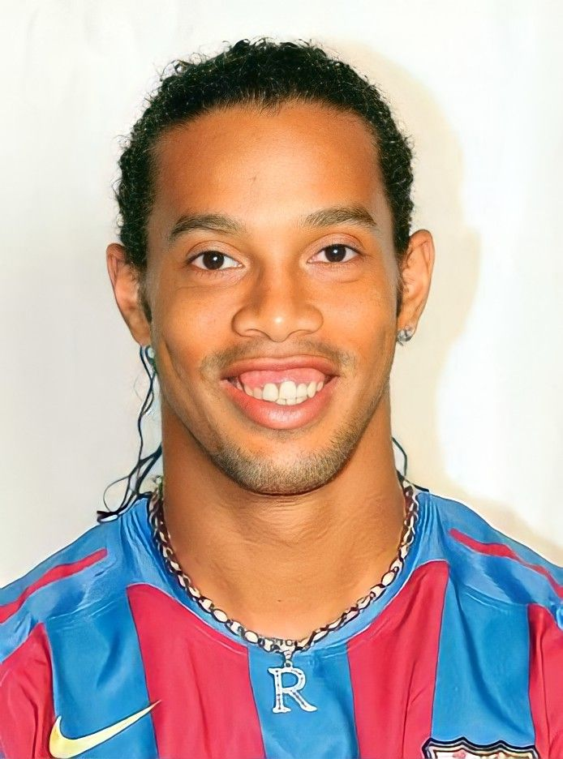
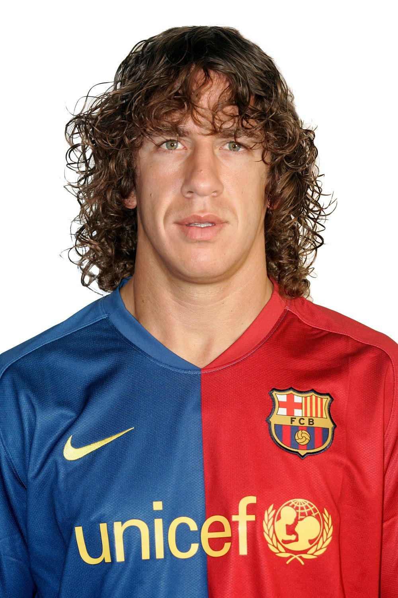
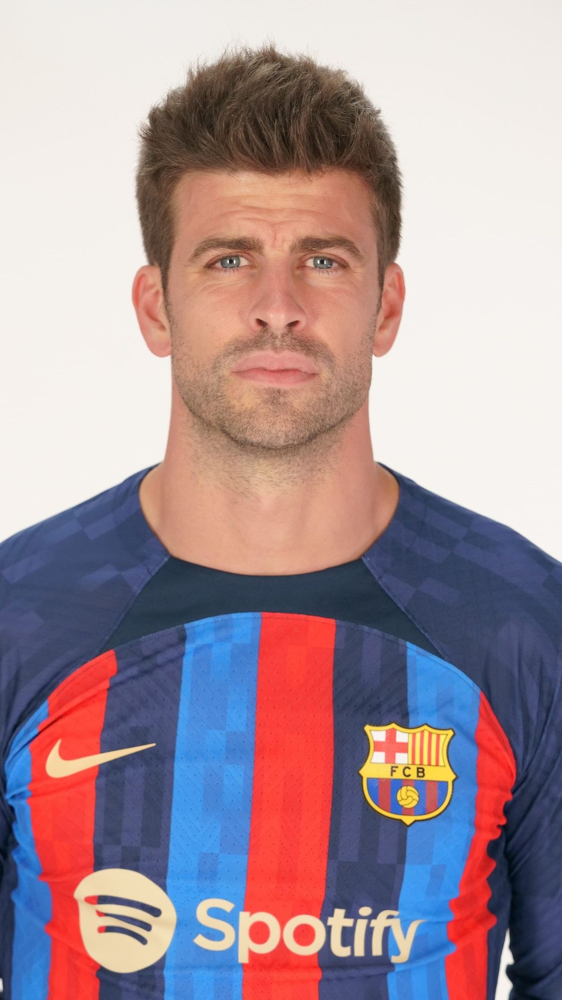
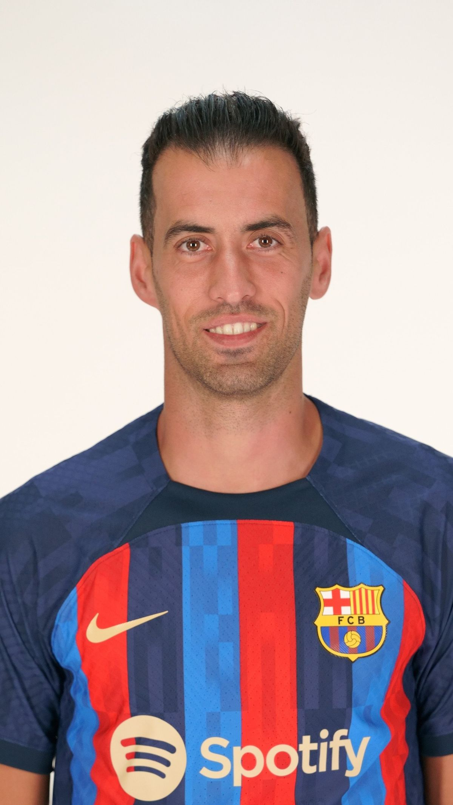
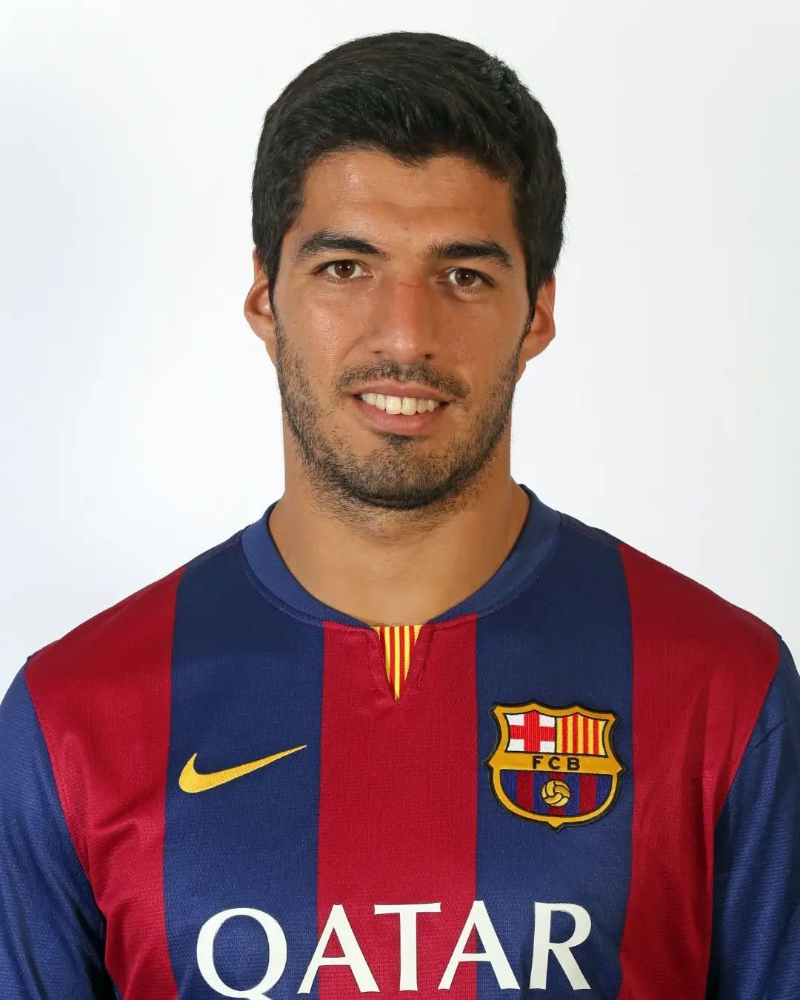
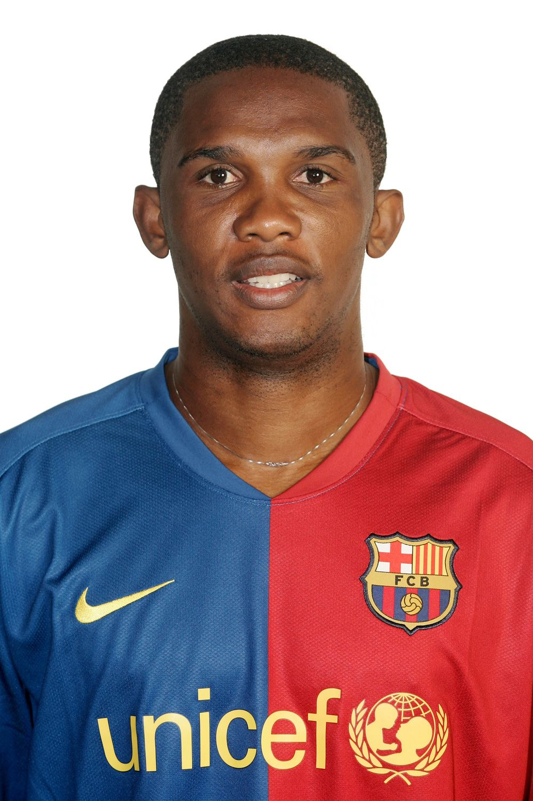
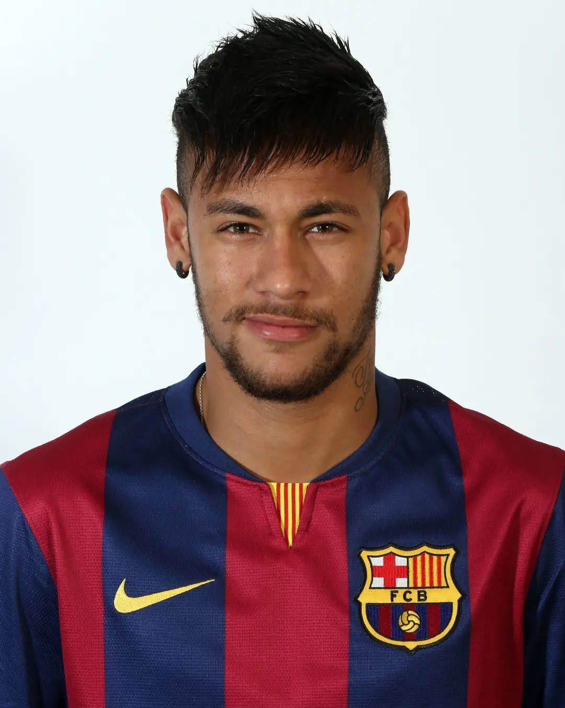

| Photo | Name | Years | Games | Goals | Assists | Trophies |
|---|---|---|---|---|---|---|
 |
Lionel Messi | 2004–2021 | 778 | 672 | 268 | 35 |
 |
Xavi | 1998–2015 | 767 | 85 | 180 | 25 |
 |
Iniesta | 2002–2018 | 674 | 57 | 140 | 32 |
 |
Ronaldinho | 2003–2008 | 207 | 94 | 71 | 5 |
 |
Carles Puyol | 1999–2014 | 593 | 18 | 12 | 21 |
 |
Gerard Piqué | 2008–2022 | 616 | 53 | 13 | 30 |
 |
Sergio Busquets | 2008–2023 | 722 | 18 | 40 | 32 |
 |
Luis Suárez | 2014–2020 | 283 | 198 | 97 | 13 |
 |
Samuel Eto’o | 2004–2009 | 199 | 130 | 25 | 8 |
 |
Neymar Jr | 2013–2017 | 186 | 105 | 76 | 10 |